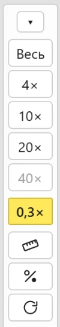
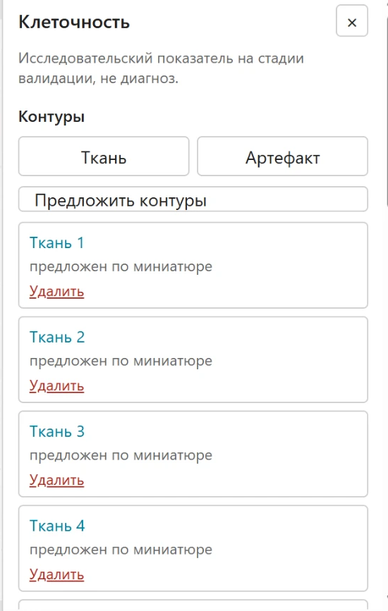
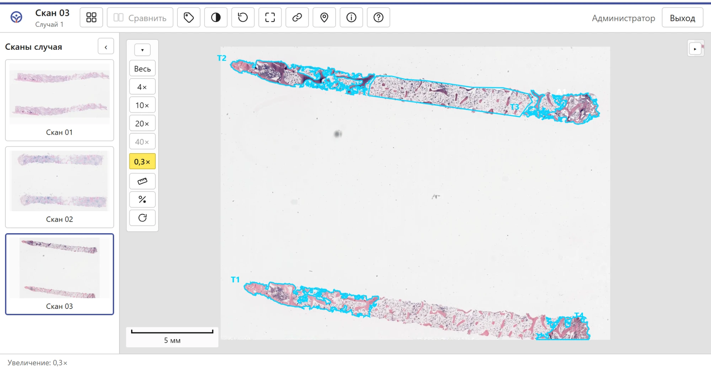
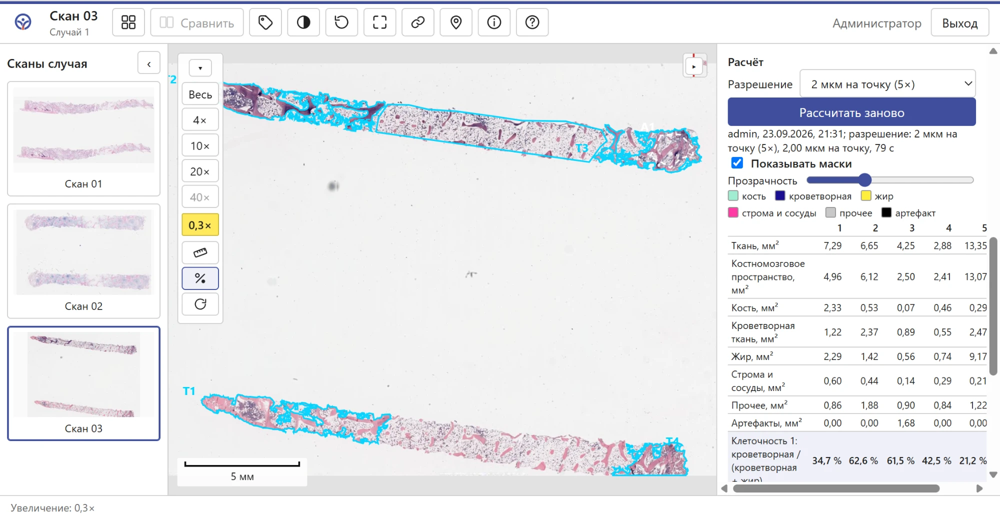
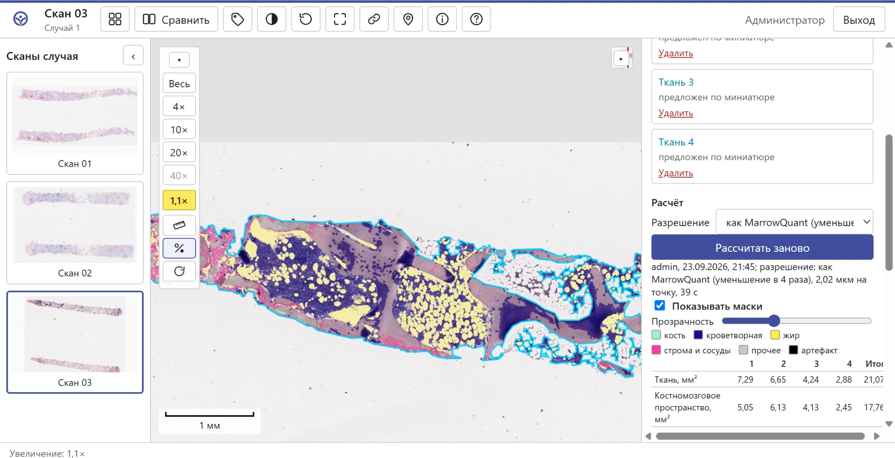
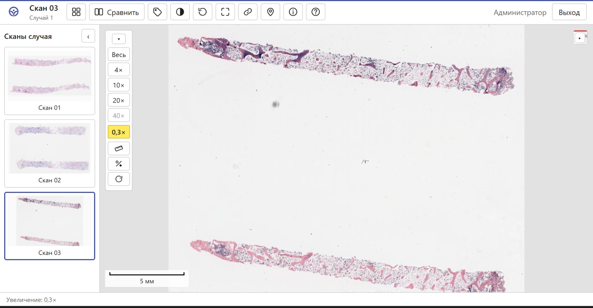

HemCenterHistoDigital · инструкция для пользователей · сентябрь 2026 · редакция 1. Снимки сделаны на рабочем сервере на тестовом скане Центра.
По скану трепанобиоптата с окраской гематоксилином и эозином программа делит обведённую ткань на пять частей: кость, кроветворную ткань, жир, строму с сосудами и прочее. По их площадям она считает клеточность двумя формулами (раздел 4), показывает результат таблицей по каждому фрагменту и итог по стеклу, а сами части раскрашивает поверх препарата.
Считается на сервере, в отдельном процессе с пониженным приоритетом: остальные пользователи просмотра не замечают. Расчёт по стеклу занимает от нескольких десятков секунд до пары минут в зависимости от площади ткани и выбранного разрешения.
В основе — MarrowQuant 2.0: открытый инструмент для оценки костного мозга, описанный в статье Sarkis R. и соавт. «MarrowQuant 2.0: A Digital Pathology Workflow Assisting Bone Marrow Evaluation in Experimental and Clinical Hematology», Modern Pathology, 2023, 36(4):100088. Код авторов опубликован свободно (лицензия BSD-3) и работает внутри программ QuPath и ImageJ.
Метод классический, без нейросетей: цвет раскладывается на составляющие гематоксилина и эозина, каждая часть выделяется автоматическим порогом, маски сглаживаются, слипшиеся жировые клетки разделяются и отбираются по размеру и форме. В статье метод проверен на 250 образцах (норма, ОМЛ, МДС): точность масок в среднем 86 % (кость 99 %, кроветворная ткань 92 %, жир 98 %), согласие с четырьмя гематопатологами R = 0,92–0,98; на образцах повседневной диагностики R = 0,86.
Простыми словами: оригинал живёт в настольных программах QuPath и ImageJ, которые нужно ставить на каждый компьютер и запускать вручную. Мы перенесли те же шаги на сервер вьювера, чтобы расчёт запускался кнопкой прямо на открытом скане. Как это делалось:
Решения, принятые заказчиком: нейросетевое выделение жировых клеток (StarDist) не переносится — оно требует много памяти и не влияет на клеточность; сверка с QuPath дальше первого скана не проводится — проверка по результату у патологов; разрешение расчёта (1 или 2 мкм на точку) будет выбрано по итогам валидации.
Все площади считаются внутри обведённой ткани в мм². Обозначения: T — ткань (площадь внутри контура), B — кость, Hm — кроветворная ткань, Ad — жир, IMV — строма и сосуды, Art — артефакты (то, что вы обвели как «Артефакт»), O — прочее.
| Показатель | Формула | Смысл |
|---|---|---|
| Костномозговое пространство | M = T − B − Art | всё внутри контура без кости и артефактов |
| Прочее | O = M − Hm − Ad − IMV | остаток, который не удалось отнести ни к одной части |
| Клеточность 1 | Hm / (Hm + Ad) · 100 % | доля кроветворной ткани среди кроветворной ткани и жира — классическое «клетки к жиру» |
| Клеточность 2 | Hm / M · 100 % | доля кроветворной ткани во всём костномозговом пространстве, включая строму и прочее |
| Жир | Ad / M · 100 % | доли остальных частей в костномозговом пространстве |
| Строма и сосуды | IMV / M · 100 % | |
| Прочее | O / M · 100 % |
Итог по стеклу считается по сумме площадей всех фрагментов, а не как среднее процентов: крупный фрагмент весит больше мелкого. Например, если фрагмент 1 дал Hm = 0,95 мм² и Ad = 0,00 мм², а фрагмент 2 — Hm = 0,46 и Ad = 0,01, то итог по формуле 1 равен (0,95 + 0,46) / (0,95 + 0,46 + 0,01) = 99,3 %.
Как считаются сами части: цвет каждой точки раскладывается на гематоксилин и эозин; кость — гладкие эозинофильные участки (низкая дисперсия при выраженном эозине), строма и сосуды — участки высокой дисперсии, кроветворная ткань — по гематоксилину со сглаживанием, жир — светлые ненасыщенные участки, разделённые на клетки и отобранные по площади (не меньше 300 мкм²) и округлости. Пороги подбираются автоматически по гистограмме всей ткани, поэтому пользователь их не задаёт.
Функция открывается кнопкой со знаком процента в столбце увеличений слева от препарата (под кнопками 4×…40× и рулеткой). Она есть только у сканов с окраской H&E и известным размером пикселя; у ИГХ и других окрасок её нет. Если окраска у скана не указана, администратор выбирает её в карточке скана.


Расчёт идёт только внутри контуров. Есть два способа:
«Артефакт» — так же обводят разрывы, кровоизлияния, раздавленные участки, хрящ внутри фрагмента: эта площадь исключается из расчёта. Ненужный контур удаляется кнопкой «Удалить» в списке. Если фрагмент не нужен в расчёте, просто удалите его контур и запустите расчёт заново.

Выберите разрешение и нажмите «Рассчитать». «Как MarrowQuant» повторяет оригинал (полное разрешение, уменьшенное в 4 раза: скан 20× считается при 2 мкм на точку, скан 40× — при 1 мкм); «2 мкм» и «1 мкм на точку» дают одинаковое разрешение для любого сканера. Пока идёт расчёт, панель показывает фрагмент и стадию; кнопка «Отмена» останавливает его. Расчёты идут по одному: если сервер занят другим, ваш встанет в очередь, панель сообщит об этом.
Пока идёт расчёт, вместо кнопки запуска стоит «Отмена», под ней строка вида «Фрагмент 1 из 4: разложение окрасок» и полоса хода.
Когда расчёт закончен, в панели появляется таблица: столбец на каждый фрагмент и «Итог». Строки «Клеточность 1» и «Клеточность 2» выделены. Ниже указано, кто и когда запускал расчёт, разрешение и время. Маски ложатся поверх препарата и следуют за увеличением, поворотом и отражением.



| Цвет | Часть | Цвет | Часть |
|---|---|---|---|
| мятный | кость | розовый | строма и сосуды |
| тёмно-синий | кроветворная ткань | серый | прочее |
| жёлтый | жир | чёрный | артефакт |
Внизу панели — выключатель масок, ползунок прозрачности и подпись цветов. Цвета те же, что в MarrowQuant, так что результаты легко сравнивать с публикацией.
| Действие | Кому доступно |
|---|---|
| Видеть результат и маски | всем, у кого есть доступ к скану, в том числе с телефона |
| Обводить контуры, запускать и отменять расчёт | участникам группы «Патологи» и администратору, только с компьютера |
| Выгрузить все расчёты в таблицу (CSV) для валидации | администратору — кнопка внизу панели; сканы в выгрузке обозначены только внутренними номерами, без имён файлов |
Запуск и итог каждого расчёта записываются в журнал действий.
Техническое описание, критерии приёмки и замеры — раздел 13.8 технического задания проекта. Инструкция подготовлена 23.09.2026.